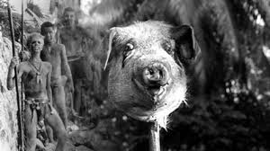

Blog #3
Things haven’t gone exactly the way I liked. Okay that was an understatement. In fact, things have been going downhill ever since. Everyone was becoming more and more hostile. I thought my relationship with Jack would improve but the opposite happened. Hostilities worsened and everyone was becoming more and more disobedient. People became more savage and were wandering off to a less civilized way of life. Everyone was becoming more concerned about a beast wandering around and rather do their own thing or brute force everything without any thinking. There was no point of being leader if no one paid attention to authority and expectations. Actually, about the authority, I lost my position as the leader after Jack created his own tribe and practically everyone joined him. But wait that wasn't the highlight. Things got really out of hand when everyone brutally murdered Simon. Sadly, I was involved. I didn’t know what went through me. It started out as a feast and in the matter of seconds we started to attack Simon. I could recall in the moments that I didn’t recognize him at all and thought that he was a threat; I thought he was the beast everyone was panicking about. Oh my goodness, it was a violent and horrendous death for Simon. We literally ripped him apart with our bare hands. All hell broke loose after the incident. It looked like our survival instinct got the best of us. It looked like humans weren’t so good after all. We really were rotten on the inside when it came to survival.
I wish the plane never crashed in the first place because I wouldn’t be in this mess right now. I MUST SURVIVEEEEE I MUSTTTTT.